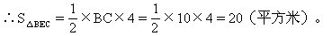

第一讲 不规则图形面积的计算（一）
我们曾经学过的三角形、长方形、正方形、平行四边形、梯形、菱形、圆和扇形等图形，一般称为基本图形或规则图形.我们的面积及周长都有相应的公式直接计算.如下表：
实际问题中，有些图形不是以基本图形的形状出现，而是由一些基本图形组合、拼凑成的，它们的面积及周长无法应用公式直接计算.一般我们称这样的图形为不规则图形。
那么，不规则图形的面积及周长怎样去计算呢？我们可以针对这些图形通过实施割补、剪拼等方法将它们转化为基本图形的和、差关系，问题就能解决了。
例1 如右图，甲、乙两图形都是正方形，它们的边长分别是10厘米和12厘米.求阴影部分的面积。
解：阴影部分的面积等于甲、乙两个正方形面积之和减去三个“空白”三角形（△ABG、△BDE、△EFG）的面积之和。
又因为S甲+S乙=12×12+10×10=244，
所以阴影部分面积=244-（50+132+12）=50（平方厘米）。
例2 如右图，正方形ABCD的边长为6厘米，△ABE、△ADF与四边形AECF的面积彼此相等，求三角形AEF的面积.
解：因为△ABE、△ADF与四边形AECF的面积彼此相等，所以四边形AECF的面积与△ABE、△ADF的面积都等于正方形ABCD
在△ABE中，因为AB=6.所以BE=4，同理DF=4，因此CE=CF=2，
∴△ECF的面积为2×2÷2=2。
所以S△AEF=S四边形AECF-S△ECF=12-2=10（平方厘米）。
例3 两块等腰直角三角形的三角板，直角边分别是10厘米和6厘米。如右图那样重合.求重合部分（阴影部分）的面积。

解：在等腰直角三角形ABC中
∵AB=10
∵EF=BF=AB-AF=10-6=4，
∴阴影部分面积=S△ABG-S△BEF=25-8=17（平方厘米）。
例4 如右图，A为△CDE的DE边上中点，BC=CD，若△ABC（阴影部分）面积为5平方厘米.求△ABD及△ACE的面积.

解：取BD中点F，连结AF.因为△ADF、△ABF和△ABC等底、等高，所以它们的面积相等，都等于5平方厘米.
所以△ACD的面积等于15平方厘米，△ABD的面积等于10平方厘米。
又由于△ACE与△ACD等底、等高，所以△ACE的面积是15平方厘米。
例5 如下页右上图，在正方形ABCD中，三角形ABE的面积是8平方厘
解：过E作BC的垂线交AD于F。
在矩形ABEF中AE是对角线，所以S△ABE=S△AEF=8.在矩形CDFE中DE是对角线，所以S△ECD=S△EDF。
例6 如右图，已知：S△ABC=1，
解：连结DF。
∵AE=ED，
∴S△AEF=S△DEF；S△ABE=S△BED，

例7 如下页右上图，正方形ABCD的边长是4厘米，CG=3厘米，矩形DEFG的长DG为5厘米，求它的宽DE等于多少厘米？
解：连结AG，自A作AH垂直于DG于H，在△ADG中，AD=4，DC=4（AD上的高）.
∴S△AGD=4×4÷2=8，又DG=5，
∴S△AGD=AH×DG÷2，
∴AH=8×2÷5=3.2（厘米），
∴DE=3.2（厘米）。
例8 如右图，梯形ABCD的面积是45平方米，高6米，△AED的面积是5平方米，BC=10米，求阴影部分面积.

解：∵梯形面积=（上底+下底）×高÷2
即45=（AD+BC）×6÷2，
45=（AD+10）×6÷2，
∴AD=45×2÷6-10=5米。
∴△ADE的高是2米。
△EBC的高等于梯形的高减去△ADE的高，即6-2=4米，

例9 如右图，四边形ABCD和DEFG都是平行四边形，证明它们的面积相等.
证明：连结CE， ABCD的面积等于△CDE面积的2倍，而 DEFG的面积也是△CDE面积的2倍。
ABCD的面积等于△CDE面积的2倍，而 DEFG的面积也是△CDE面积的2倍。
∴ ABCD的面积与 DEFG的面积相等。